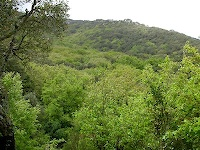
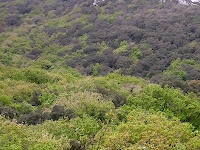
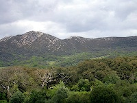
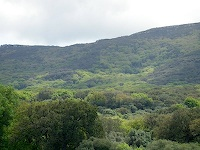
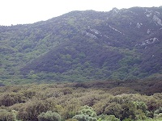

Study Sites
Previous
1
2
3
Alcornocales
Sierra de Aljibe, Parque Natural de Los Alcornocales, C‡diz, Spain. 700 m.

Image 19

Image 20
Stand with Quercus suber and Quercus canariensis

Image 21
Slope with Quercus suber and Quercus canariensis

Image 22
Stand with Quercus suber and Quercus canariensis

Image 23
Slope with Quercus suber and Quercus canariensis